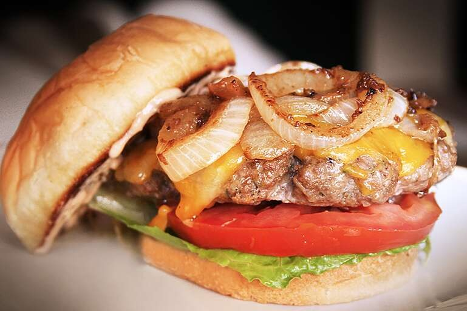

The Best Hamburger

Description
The best burger recipe for summertime grilling!
This juicy burger is jam-packed with all kinds of stuff and
has no tasteless bread crumbs.
Serve on buns with your favorite condiments.
Ingredients
1½ pounds lean ground beef
½ onion, finely chopped
½ cup shredded Colby Jack or Cheddar cheese
1 egg
1 envelope dry onion soup mix
1 glove garlic, minced
1 tablespoon garlic powder
1 teaspoon soy sauce
1 teaspoon Worcestershire sauce
1 teaspoon dried parsley
1 teaspoon dried basil
1 teaspoon dried oregano
½ teaspoon crushed dried rosemary
salt and pepper to taste
Steps
- Preheat an outdoor grill for high heat and lightly oil the grate.
- Meanwhile, combine ground beef, onion, cheese, egg, onion soup mix, minced garlic, garlic powder, soy sauce, Worcestershire sauce, parsley, basil, oregano, rosemary, salt, and pepper in a large bowl. Use your hands to form the mixture into 4 patties
- Cook patties on the preheated grill until no longer pink in the center and the juices run clear, about 4 to 5 minutes per side. An instant-read thermometer inserted into the center should read at least 165 degrees F (74 degrees C).